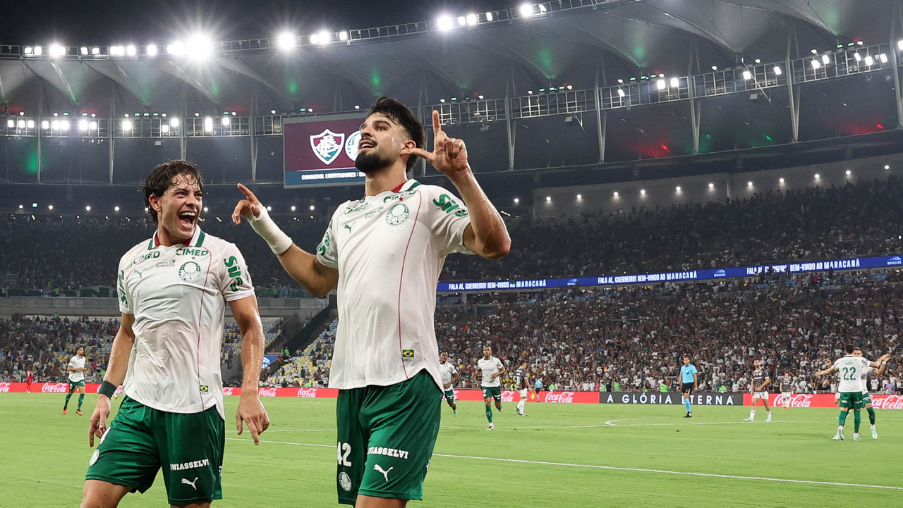

O Palmeiras deu um passo importante em direção à final da Copa Libertadores de 2026 ao vencer o Fluminense por 2 a 1, na quarta-feira, 14 de outubro, no Maracanã. Em um confronto marcado pelo domínio territorial tricolor e pela eficiência ofensiva alviverde, a equipe paulista aproveitou suas oportunidades e conquistou uma vantagem significativa para o segundo jogo da semifinal.
Flaco López abriu o placar aos 44 minutos do primeiro tempo, enquanto Marlon Freitas ampliou aos 38 minutos da etapa final. Quando o Palmeiras parecia encaminhar uma vitória por dois gols de diferença, Wesley Natã marcou de cabeça nos acréscimos e diminuiu o prejuízo dos cariocas.
O resultado deixou o Palmeiras em condições de avançar à final com um empate no confronto de volta, marcado para 21 de outubro, no Nubank Parque, em São Paulo. O Fluminense, por sua vez, precisará vencer fora de casa para continuar sonhando com seu segundo título continental.
Primeiro tempo
A partida começou com o Fluminense assumindo o protagonismo ofensivo. Com PH Ganso participando da construção das jogadas, Hulk como referência no ataque e Canobbio oferecendo movimentação, a equipe comandada por Marcão procurou explorar os espaços na defesa palmeirense.
Logo aos dois minutos, Hulk recebeu um lançamento de Ganso e ajeitou para Canobbio finalizar por cima do gol. Aos 17, o próprio Hulk encontrou espaço na entrada da área e arriscou um chute perigoso.
O Fluminense manteve maior presença ofensiva durante boa parte da etapa inicial. Nonato também tentou de fora da área, enquanto Canobbio apareceu novamente em uma finalização sem direção.
A melhor oportunidade tricolor aconteceu aos 40 minutos. Ganso encontrou Hulk dentro da área, e o atacante finalizou com força, exigindo uma intervenção importante de Carlos Miguel.
Apesar da pressão, quem conseguiu transformar uma oportunidade em gol foi o Palmeiras.
Aos 44 minutos, em uma jogada rápida do Palmeiras, Piquerez avançou pela esquerda e cruzou rasteiro. Flaco López apareceu na área e finalizou para superar Fábio, que ainda tocou na bola, mas não conseguiu impedir a abertura do placar.
O gol representou a principal característica do Palmeiras naquela primeira etapa: uma equipe menos presente no ataque, porém capaz de aproveitar o espaço encontrado para transformar sua chegada ofensiva em vantagem.
Segundo tempo
A etapa final manteve parte da dinâmica da partida antes do intervalo. O Fluminense continuou trabalhando a bola no campo ofensivo, enquanto o Palmeiras preservava sua organização defensiva e procurava oportunidades para contra-atacar.
Marcão promoveu a entrada de Hércules no lugar de Martinelli durante o intervalo. Aos sete minutos, o volante tentou uma finalização de fora da área, defendida por Carlos Miguel.
Pouco depois, aos 12 minutos, Savarino cobrou escanteio e Canobbio desviou de cabeça, obrigando o goleiro palmeirense a realizar outra defesa.
O Palmeiras também encontrou oportunidades para ameaçar Fábio. Com as entradas de Felipe Anderson, Ramón Sosa e Maurício, a equipe renovou suas opções ofensivas para a parte final do confronto.
Aos 38 minutos do segundo tempo, veio o segundo gol alviverde.
Após uma jogada ofensiva que exigiu uma defesa de Fábio em finalização de Ramón Sosa, Felipe Anderson conseguiu ajeitar a bola de cabeça para Marlon Freitas. O meio-campista finalizou com precisão e ampliou a vantagem para 2 a 0.
O lance colocou o Palmeiras muito perto de levar uma diferença de dois gols para São Paulo e premiou a eficiência da equipe visitante em uma partida na qual o Fluminense havia criado oportunidades importantes.
Quando a vitória palmeirense por 2 a 0 parecia definida, o Fluminense encontrou um gol importante para a continuidade da semifinal.
Aos 47 minutos, Guga avançou pela direita e levantou a bola na área. Wesley Natã, de apenas 18 anos, aproveitou a jogada aérea e cabeceou para superar Carlos Miguel, diminuindo o placar para 2 a 1.
O atacante havia entrado na reta final da partida, substituindo Savarino, e conseguiu participar diretamente do lance que alterou a vantagem no confronto.
Embora não tenha evitado a derrota diante da torcida, o gol mudou consideravelmente a situação do Fluminense para o jogo da volta.
Uma vitória por um gol de diferença em São Paulo será suficiente para levar a decisão da vaga aos pênaltis.
O resultado também reforçou uma característica presente na trajetória continental do Fluminense em 2026: a capacidade de continuar competindo mesmo diante de situações desfavoráveis.
Veja os melhores momentos da partida abaixo:
A organização palmeirense foi determinante no Maracanã
Os números ajudam a explicar o contraste entre as propostas das duas equipes. O Fluminense terminou a partida com 64% de posse de bola e 11 finalizações, contra 36% de posse e sete chutes do Palmeiras. Apesar de controlar a bola por mais tempo e finalizar mais, o Tricolor encontrou dificuldades para superar a organização defensiva adversária. O Palmeiras, por sua vez, suportou a pressão, fechou os espaços e foi mais eficiente nas oportunidades que criou. Com apenas sete finalizações, cinco delas na direção do gol, a equipe paulista marcou duas vezes e conquistou uma vitória que demonstrou como a eficiência pode superar o domínio territorial em confrontos eliminatórios.
A eficiência do Palmeiras esteve justamente em transformar oportunidades pontuais em gols, mesmo sem controlar a posse de bola durante a maior parte do confronto.
O que cada equipe precisa para chegar à final da Libertadores
Com o resultado de 2 a 1 no jogo de ida, o Palmeiras passou a depender de um empate em casa para garantir presença na decisão.
Os cenários para a partida de volta são:
- Vitória do Palmeiras ou empate: Palmeiras classificado.
- Vitória do Fluminense por um gol de diferença: decisão nos pênaltis.
- Vitória do Fluminense por dois ou mais gols de diferença: Fluminense classificado.
Não existe vantagem pelo gol marcado fora de casa nessa fase da competição. Portanto, o confronto será definido pelo placar agregado e, se necessário, por uma disputa de penalidades.
A segunda partida da semifinal da Copa Libertadores de 2026 está programada para quarta-feira, 21 de outubro, no Nubank Parque, em São Paulo.
Vantagem palmeirense mas a vaga continua aberta
O resultado no Maracanã mostrou como a eficiência pode ser determinante em confrontos eliminatórios, principalmente da Libertadores.
O Fluminense teve maior controle territorial, criou oportunidades e conseguiu pressionar a defesa adversária, mas não transformou esse volume em gols suficientes para evitar a derrota.
O Palmeiras, por outro lado, encontrou soluções ofensivas nos momentos mais importantes, explorou os espaços disponíveis e demonstrou organização para suportar a pressão fora de casa.
O gol de Wesley Natã nos acréscimos impediu que a equipe paulista levasse uma vantagem ainda maior para o jogo decisivo.
Assim, o primeiro capítulo da semifinal terminou com dois sentimentos diferentes: o Palmeiras saiu do Maracanã com uma vitória valiosa e a possibilidade de administrar o empate em São Paulo; o Fluminense deixou o campo derrotado, mas com a certeza de que uma vitória simples poderá levar a disputa pela vaga aos pênaltis.
A partida de 14 de outubro de 2026 ficará marcada pelo contraste entre a superioridade territorial do Fluminense e a precisão do Palmeiras nos momentos decisivos. Um confronto que reforçou a importância de cada oportunidade no mata-mata da Libertadores e deixou a definição do finalista para o segundo encontro.